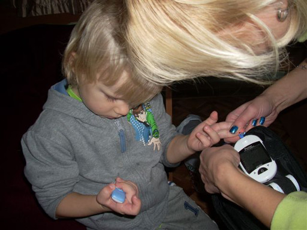

Spenden
Verein Belarus Diabetes
8910 Affoltern a. A.
PC-Konto: 60-174261-3
IBAN: CH 13 0900 0000 6017 4261 3
Herzlichen Dank!
Wie kann ich helfen?
Viele Menschen in Belarus haben wenig Geld und darum ist jede Form von finanzieller Hilfe sehr wertvoll. Die Unterstützung des Diabetes-Projekts in Belarus ermöglicht Kindern den richtigen Umgang mit Diabetes und hilft Spätfolgen zu minimieren.
Helfen Sie den Diabetes-Kindern mit Ihrer Spende!
Unser Flyer zum downloaden und weiterverteilen.

Blutzucker messen